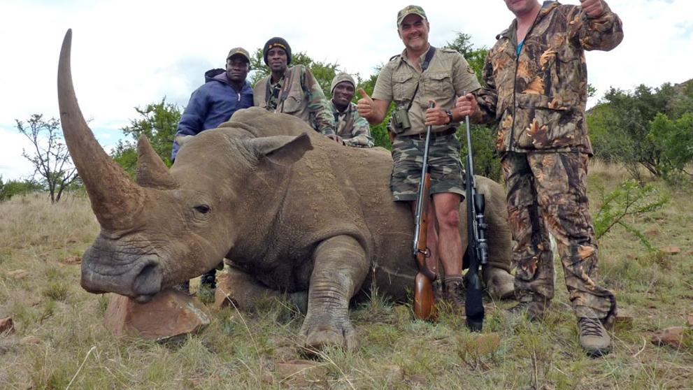
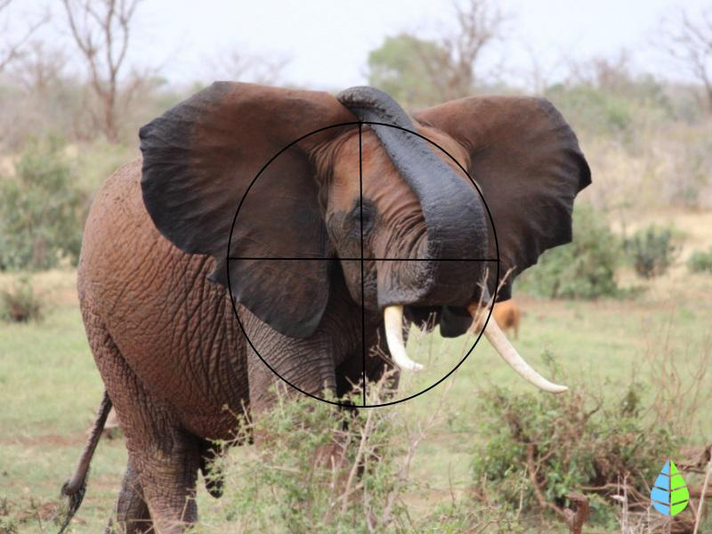
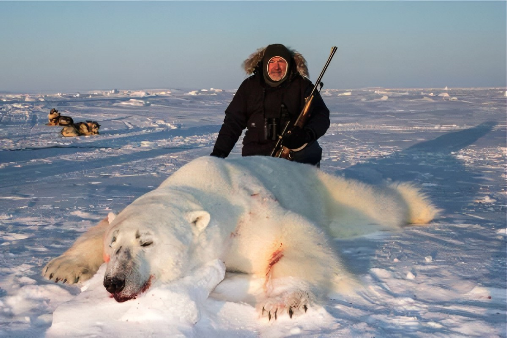

¡Entre las filas de la larga ristra animales en peligro de extinción, muchos se hallan gravemente amenazados por la caza furtiva que alimenta el tráfico ilegal de animales. Según afirma un estudio publicado en The Royal Society, más de 300 especies de mamíferos están al borde de la extinción debido a la caza furtiva.!
La caza furtiva de animales salvajes es descomunal; se asesinan o capturan millones de ejemplares de animales de miles de especies en todo el mundo en sus hábitats nativos. Esta práctica supone una amenaza creciente para elefantes, rinocerontes y otros célebres animales,así como para criaturas más pequeñas y desconocidas, como ciertos lagartos, pangolines y monos.
Pero este fenómeno no solo afecta a animales exóticos. En todo el mundo hay más de 2000 millones de ovejas y cabras que existen debido a su carne, leche y lana, o como animales de compañía. Pero a pesar de la ubicuidad de estos animales domésticos, pocas personas saben que tienen homólogos silvestres, y menos aún, que casi todas las cabras y ovejas silvestres del mundo están haciendo frente a una importante disminución de su población hasta el punto en el que muchas están en peligro de extinción. Las causas son poco conocidas, pero un nuevo estudio revela que la caza furtiva es una de las principales responsables.
La caza furtiva está perseguida por la mayoría de los países y el comercio de especies exóticas a nivel internacional esta bastante regulado. Pero aun así, las redes de caza furtiva en el mundo en más ocasiones de las deseables sus instigadores escapan a la justicia.
Hay muchas causas para la extinción de las especies animales, la principal es la destrucción de su hábitat (deforestaciones masivas de bosques, construcción de carreteras, urbanización, presas,…), lo que obliga a las poblaciones animales a migrar cada vez a zonas más reducidas, perdiendo contactos con otros animales de su especie y, por tanto, limitando su variabilidad genética. Este hecho unido a la caza de animales, tanto legal como furtiva, lleva a las especies al borde de la extinción.
La población de aves se ha reducido en un 58% y la de mamíferos en un 83%. Aunque la caza se practica desde hace miles de años, hoy en día debido a la demanda y acceso a tecnologías que nunca existieron hasta ahora, la caza ilegal o furtiva es mucho más desmesurada. Los animales se sienten muy amenazados por la presencia del ser humano. El suelo empobrece su calidad, los nutrientes son más escasos y empeora la polinización con consecuencias en la producción vegetal. La extinción de animales por la caza empeora la calidad del agua y puede aumentar el brote de distintas enfermedades y plagas.
El nuevo informe de la comisión para la supervivencia de las especies -SSC- de la IUCN llevado a cabo con la colaboración de varios grupos de especialistas en rinocerontes asiáticos y africanos parece ser portador de varias buenas noticias para la especie en todo el mundo. Y es que, según el mismo, la tasa de caza furtiva de estos emblemáticos animales ha disminuido desde el año 2018; así como el comercio ilegal, ya que la estimación de los cuernos de rinoceronte que este año han ingresado a los mercados es la más baja registrada desde el año 2013.
La lucha contra la caza furtiva también tiene implicaciones legales y políticas. Es fundamental contar con leyes y regulaciones sólidas que penalicen de manera severa esta actividad ilegal, así como promover políticas de conservación y protección de la vida silvestre.
Además, la cooperación entre los países y el intercambio de información son esenciales para combatir el tráfico internacional de especies.
Podemos ayudar denunciando cualquier actividad sospechosa, apoyando organizaciones y proyectos de conservación, y promoviendo la educación ambiental.
Se están implementando estrategias como la vigilancia y patrullaje en áreas protegidas, el fortalecimiento de leyes y sanciones, y la educación y concientización de la población.
La caza furtiva es una amenaza que no podemos ignorar. La pérdida de biodiversidad y el desequilibrio de los ecosistemas son consecuencias directas de esta actividad ilegal. Sin embargo, con el esfuerzo conjunto de gobiernos, organizaciones conservacionistas y la sociedad en general
  Geovanni Lopez Juarez
Leyda Lizeth Leyva Iturbire
Cristian Eli Lazaro Perez
Noe Alegrandro Martinez Martinez
TELÉFONO 55 52 65 07 80 Proteccion Animal
Tel.: (800) 2-32-08-35 y (722) 2-19-26-61 Correo Electronico: ecotel@edomex.gob.mx
.
.